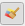
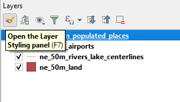
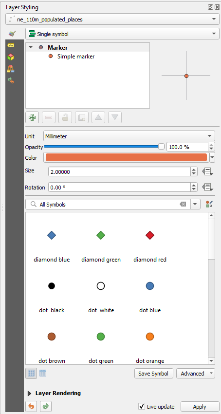
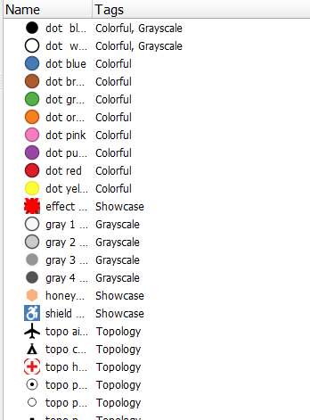
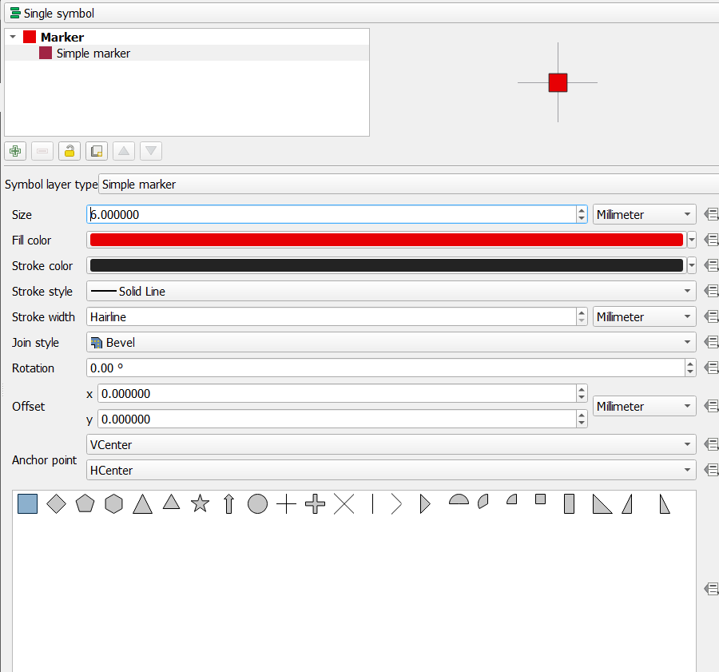
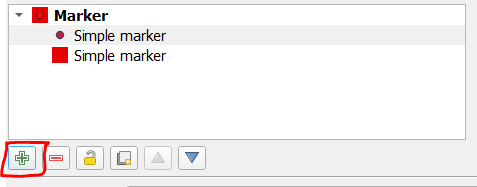
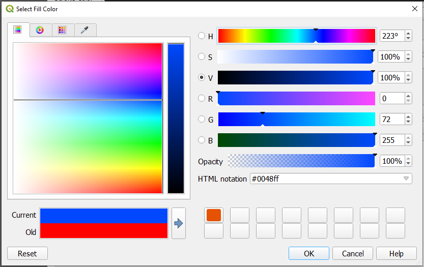
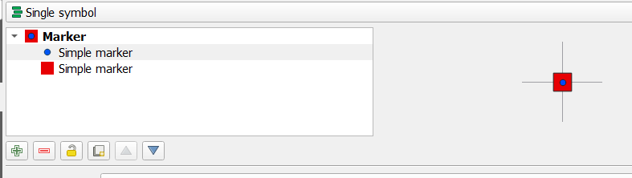

Symbology
Back To Basic Concepts
Back To Homepage
Opening The Styling Toolbar and Options
Styling layers can be done either through the Layer Styling toolbar or the layer's symbology properties.
Opening the Layer Styling toolbar can be done by selecting a layer and pressing F7 key or the little brush  icon in the layers toolbar.

The Layer Styling toolbar should open on the right side of the screen, and look like this:

Point Symbology
Point Single Symbol Options
Single Symbol is as suggested the simplest way a symbology can be defined.
This style requires you to define one symbol.
We can use one of the predefined symbols as shown below, or define our own symbol.

Note Your point symbology, even if defined to be a simple symbol, can include multiple parts.
We'll style our points here using a large red square behind a blue circle.
First we'll define the simple red square marker, and resize it to 6 points, as defined below.

We now add another simple symbol.

Set the color to blue.

And our end marker should look something like this.

Fill free to keep exploring the other single marker options such as SVG Marker or Filled Marker.